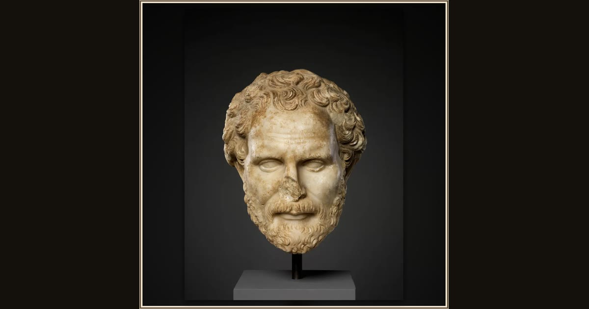

Marble head of Demosthenes
Roman Imperial · 2nd century CE · met
A Roman marble head of Demosthenes; Aristotle cites his comparison of the people to seasick passengers among examples of similes (3.4.3) Explore its place in Aristotle's Rhetoric, Book III, section 32.